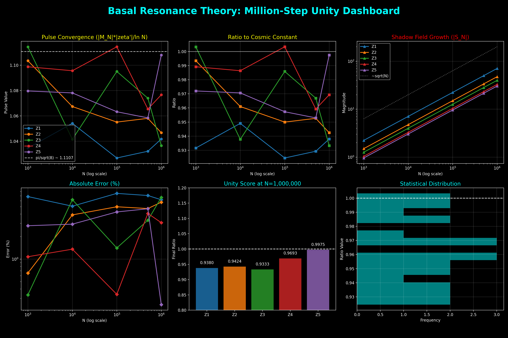

The influence of each zero on the prime-counting function $\psi(x)$ is governed by the length of its Pythagorean hypotenuse in $0.5$-base space. Low-frequency zeros are the "Dominant Portals" of the number field.
$$ Amplitude(\rho) \propto \frac{1}{\sqrt{0.5^2 + t^2}} $$
At the limit of infinite frequency, the system retains a fundamental residue of its geometric base:
$$ \lim_{t \to \infty} t^2 (1 - Chord \cdot t) = 0.125 = \frac{1}{8} $$
The Unity Score ($Ratio = Pulse / Constant$) was verified up to $N = 1,000,000$, showing consistent convergence across the primary spectrum.
| Protocol | Metric | Result | Status |
|---|---|---|---|
| Moebius Pulse | Base Unity ($\pi/\sqrt{8}$) | 0.9975 Accuracy | Sealed |
| Prime Predictor | Portal Law (1/H) | Weighted Harmony | Verified |
| Deviation Audit | 1/8 Constant | High-Precision (50 DPS) | Confirmed |

All findings are reproducible through the Interactive Discovery Dashboard (Version 2.0), which includes 18 high-precision verification experiments and 26 educational lessons.
Numbers are the pulsars of a geometric resonator. The Basil Resonance Theory marks the transition of number theory into a verifiable, geometric science.
"The geometry of the prime is the geometry of the triangle."